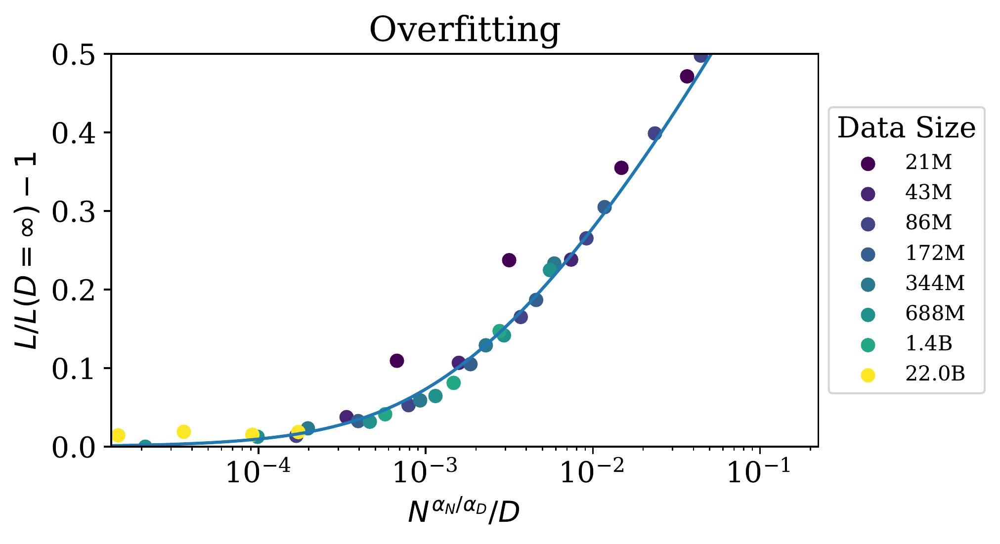

這是整篇論文最關鍵的發現之一：過擬合遵循可預測的規律。 論文發現，只要按照 $D \propto N^{0.74}$ 的比例同時增加模型大小和數據量， 就可以避免過擬合，保持性能的持續提升。
✦
這個發現的實際意義是：每增加 8 倍模型，只需增加約 5 倍數據。 這意味著數據需求的增長速度遠慢於模型大小的增長速度， 為訓練超大模型提供了可行性。
🔑 核心公式：L(N,D)
📐 統一公式：性能與模型大小和數據量
$$L(N, D) = \left[ \left( \frac{N_c}{N} \right)^{\frac{\alpha_N}{\alpha_D}} + \frac{D_c}{D} \right]^{\alpha_D}$$
其中 $\alpha_N \approx 0.076$，$\alpha_D \approx 0.095$，$\frac{\alpha_N}{\alpha_D} \approx 0.74$
🔍 公式解讀
- 當 $D \to \infty$：公式退化為 $L(N) = (N_c/N)^{\alpha_N}$（只依賴模型大小）
- 當 $N \to \infty$：公式退化為 $L(D) = (D_c/D)^{\alpha_D}$（只依賴數據量）
- 過擬合項：$\left( \frac{N_c}{N} \right)^{\frac{\alpha_N}{\alpha_D}}$ 代表模型容量限制
- 數據項：$\frac{D_c}{D}$ 代表數據不足的限制

Figure: 早期停止的測試損失 $L(N, D)$ 可預測地依賴數據集大小 $D$ 和模型大小 $N$。
對於大的 $D$，性能是 $N$ 的直線冪律。對於較小的固定 $D$，隨著 $N$ 增加，性能停止提升，模型開始過擬合。
⚖️ 過擬合的普遍性
📊 過擬合比例
過擬合的程度主要取決於比例：
$$\frac{N^{0.74}}{D}$$
這意味著：每增加 8 倍模型（$8^{0.74} \approx 5$），只需增加 5 倍數據即可避免過擬合。

Figure: 過擬合的程度主要取決於比例 $N^{0.74}/D$。
這條線是我們對該方程的擬合。
「性能只要我們同時擴展 $N$ 和 $D$，就會可預測地提升，
但如果固定 $N$ 或 $D$ 而增加另一個，就會進入收益遞減的狀態。」